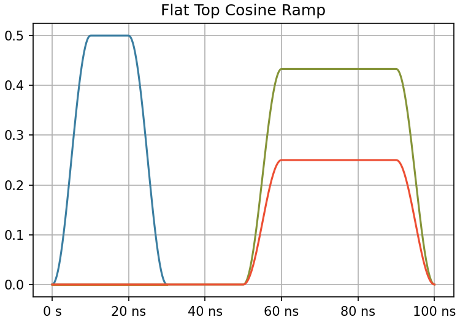
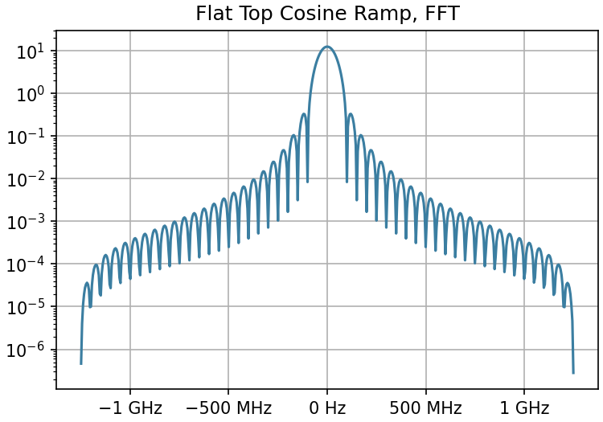
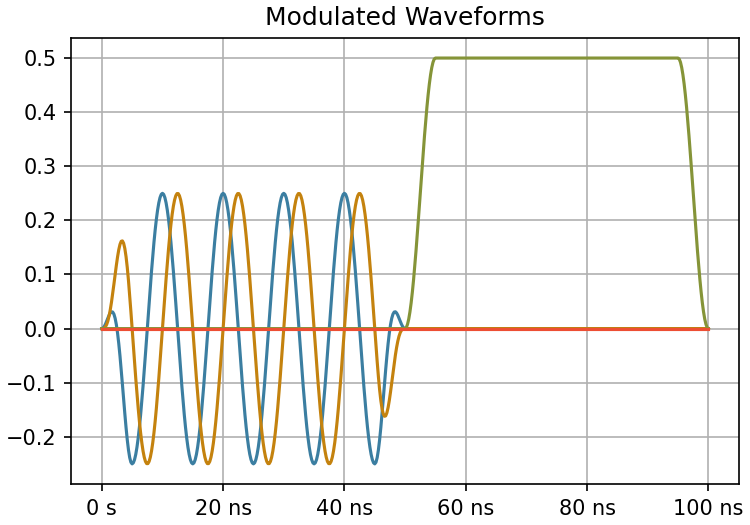
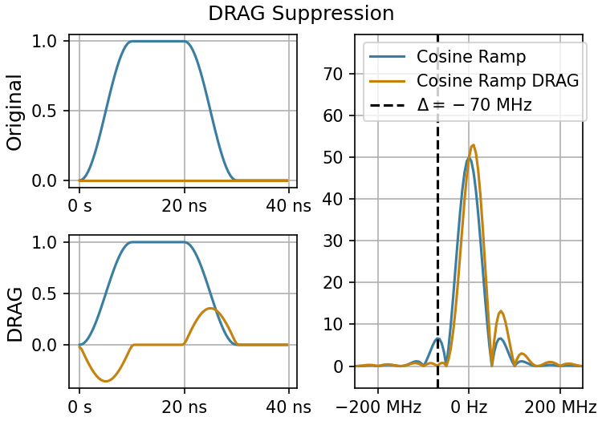
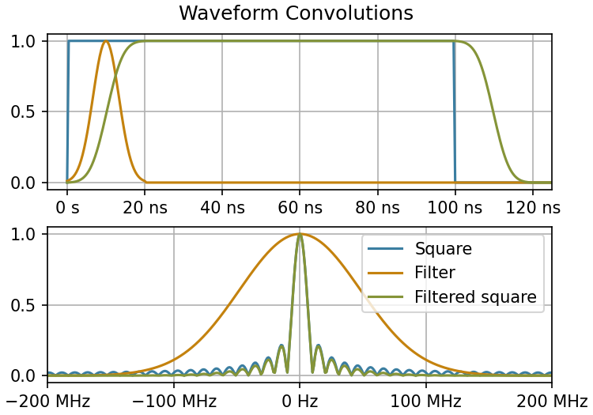

Waveforms¶
Waveforms are the fundamental building blocks for pulse level control of superconducting quantum devices. They refer to a single pulse that maps a time t to an amplitude V \in \mathbb{C} on a single logical channel.
Waveform Basics¶
All waveforms have a name and channel attribute, along with additional parameters that depend on the type of waveform.
| waveforms.py - Introduction | |
|---|---|
Waveforms are immutable, which means that you cannot modify any waveform attributes inplace. Instead, you can evolve them, which creates a new waveform instance with some optionally modified parameters.
| waveforms.py - Modifying Waveforms | |
|---|---|
Waveform Variables¶
Waveform attributes can also be variables or expressions, which act as placeholders for an attribute value until compile time. This done using SymPy under the hood. These variables or expressions can be passed in as strings, in which case they are automatically converted to a sympy expression. To create a new waveform with variables substituted, we can use the waveform resolve method.
Note
Remember, evolve is for attribute names, resolve is for variables!
Evaluating Waveforms¶
Time Domain¶
Waveforms can be evaluated in the time domain by calling the waveform instance. They can also be directly plotted using the plot method. If a waveform contains any variables, these should either be resolved first, or a value can be passed in via keyword argument, in which case they will be resolved internally.
- The
t0parameter allows us to shift the waveform with respect to time.

When evaluating the waveform, the output will be a complex array, which allows the waveform to carry phase information natively.
Frequency Domain¶
We can also take the Fourier transform of a waveform to look at a waveform in the frequency domain.
| waveforms.py - FFT | |
|---|---|

Waveform Examples¶
We will now show some examples for some commonly used waveforms. You can find the exhaustive list of provided waveforms and their documentation in the API docs.
Modulated Waveforms¶
We often want to drive a pulse that can be parameterized as a CW (constant-wave) tone with some envelope shape. These waveforms can be specified with a ModulatedWaveform.
- Modulated waveforms take their channel from the inner CW waveform, and their width from the envelope.
- When modifying waveforms that contain additional waveforms as attributes, we can chain the attributes with an underscore to modify an attribute on the inner waveform.

The modulation itself contains a flag hardware_modulation that specifies whether the frequency modulation should be evaluated in software or on the control hardware itself. When using hardware modulation, the frequency, amplitude, and phase attached to the CW waveform will be passed to the hardware instead, and the waveform evaluation will be equivalent to evaluating just the envelope.
Note
When using hardware modulation, you should typically put amplitudes and phases on the CWWaveform rather than the envelope. This is typically more memory-efficient, since the envelope can now be shared across two waveforms with a different amplitude/phase multiplier.
Virtual Z Waveforms¶
Virtual Z Waveforms1 are used to implement software Z gates via phase updates and frame tracking. See frame tracking for more details on frame tracking.
| waveforms.py - Virtual-Z Gates | |
|---|---|
DRAG¶
DRAG2 (derivative removal by adiabatic gate) is a commonly used waveform-shaping technique for minimizing unwanted transitions due to non-adiabatic effects. To modify an arbitrary envelope waveform using DRAG, we can nest it inside a DRAG waveform.
We can see the effect of first order DRAG by looking at the FFT, where we see that the fourier component at the detuning frequency is significantly suppressed compared to the original waveform.

Convolved Waveforms¶
Waveforms can also be multiplied together, which results in a convolution between two waveforms. This can be used to apply a smoothing filter on a pulse to reduce its bandwidth.
- We compute the normalization constant for the filter by integrating
- We can ignore the imaginary component because the waveforms all have zero phase.

-
D. C. McKay, et. al., Efficient Z gates for quantum computing. (2017) DOI: 10.1103/PhysRevA.96.022330 ↩
-
L. S. Theis, et. al., Counteracting systems of diabaticities using DRAG controls: The status after 10 years. (2018) DOI: 10.1209/0295-5075/123/60001 ↩